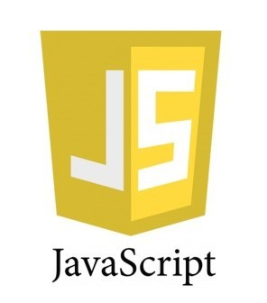

JavaScript is a cross-platform, object-oriented scripting language developed by Netscape was first used in Netscape browsers. However, Netscape was working with European Computer Manufacturers Association (ECMA) to deliver a standardized, international programming language based on core JavaScript. 
ECMA is an international standards association for information and communication systems. This standardized version of JavaScript, called ECMAScript, behaves the same way in all applications that support the standard. Companies can use the open standard language to develop their implementation of JavaScript. The first version of the ECMA standard was documented in the ECMA-262 specification. The ECMA-262 standard is also approved by the ISO (International Organization for Standardization) as ISO-16262.